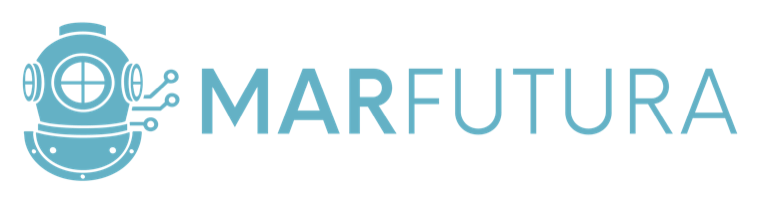

Una red de estaciones acústicas de bajo costo que escuchan el océano en tiempo real para detectar amenazas como la pesca ilegal, y caracterizar el paisaje sonoro de la costa.
Cada estación combina un hidrófono, un pequeño computador y algoritmos de detección alimentados por energía solar. Escucha las 24 horas, envía alertas cuando reconoce eventos de interés y publica indicadores del estado del mar y del ecosistema. Elige un sitio para explorar sus datos.
Monitoreo Acústico Submarino
Distribución horaria de las alertas (hora local). Revela franjas del día con más detecciones.
| Fecha y hora | Nivel de sonido | Pico | Modelo | Dispositivo | |
|---|---|---|---|---|---|
| Cargando... | |||||
Cargando indicadores acústicos…
NDSI (−1 antropofonía … +1 biofonía) y tasa de clicks de camarón, mediana cada 15 min.
Mediana por hora del día (hora local), banda = cuartiles 25–75%. Últimos días agregados.
Cargando condiciones oceanográficas…
Línea continua = observado (últimos días); línea punteada = pronóstico. La línea vertical marca “ahora”. Fuente: WorldWeatherOnline · Zapallar.
Fija los límites de una condición de mar calmo. Se reflejan como líneas de umbral en los gráficos de arriba, alimentan la tarjeta de ventana de buceo y se usan en la pestaña Análisis para clasificar las alertas. Se guardan en este navegador (solo afectan esta vista). La alerta de WhatsApp de buen mar se configura por separado.
Cargando análisis…
Energía del mar y viento sobre el mismo eje temporal; cada ▲ es una alerta de detección. Permite ver de un vistazo si las detecciones coinciden con mar calmo (buen buceo).
Cada alerta se cruza con la condición de mar en ese momento. La hipótesis: más detecciones con “mar bueno”.
Cada punto es una muestra acústica: NDSI (eje X) contra tasa de clicks de camarón (eje Y). Sirve para ver si ambos indicadores se mueven juntos.
Tasa de clicks y energía del mar (swell² × período) sobre el mismo eje temporal. Explora si el oleaje modula la actividad biológica.
Cargando estado del sensor...